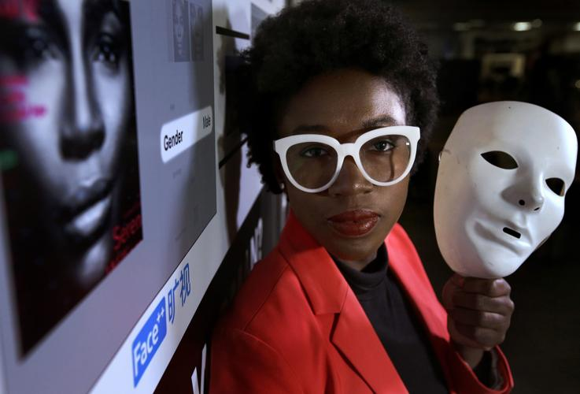

2026.07.07
조이 부올람위니
Joy Buolamwini
흰 가면 앞에서 시작해 알고리즘 정의의 언어를 만든 사람이다.
조이 부올람위니의 길을 따라가면 기술윤리는 선언문이 아니라 얼굴, 감시, 경찰, 교육, 의료, 시민권의 문제로 보이기 시작한다.

조이 부올람위니가 처음부터 알고리즘 정의라는 말을 들고 세상 앞에 선 것은 아니었다. 그는 캐나다 에드먼턴에서 태어났고, 미국 남부에서 자랐다. 가나계 이민자 가정의 아이였고, 집 안에는 학문과 예술이 함께 있었다.
공개 약력에서 그는 자신을 컴퓨터과학자이자 poet of code, 그러니까 코드의 시인으로 소개한다. 그 말은 나중에 붙인 멋진 별명처럼 보이지만, 그의 삶을 따라가다 보면 꽤 오래된 두 갈래가 만난 이름처럼 보인다. 한쪽에는 기계와 코드가 있었고, 다른 한쪽에는 리듬과 이미지, 목소리와 무대가 있었다.
로봇을 보던 아이
그가 컴퓨터에 마음을 빼앗긴 것은 아홉 살 무렵이었다고 한다. 텔레비전에서 MIT의 사회적 로봇 키스멧을 보았다. 귀가 움직이고, 표정을 짓고, 사람과 감정적으로 반응하는 것처럼 보이는 기계였다. 어린 조이는 그때 기계도 이렇게 사람과 마주할 수 있다는 사실에 놀랐고, 언젠가 MIT에 가서 로봇을 만들겠다고 생각했다.
그는 혼자 웹 언어를 배우기 시작했다. XHTML, 자바스크립트, PHP 같은 말들이 아직 어린 아이의 방 안으로 들어왔다. 그렇다고 책상 앞에만 앉아 있던 아이는 아니었다. 테네시 코르도바 고등학교에 다녔고, 농구를 했고, 장대높이뛰기 선수이기도 했다. 운동장과 코딩, 물리 숙제와 로봇의 이미지가 한 사람의 어린 시절 안에 같이 놓여 있었다.
대학은 조지아공대였다. 그는 컴퓨터과학을 공부했고, 보건정보학 연구에도 참여했다. 2009년에는 조지아공대 인벤처 프라이즈 최연소 결선 진출자였고, 2012년에는 스탬프스 대통령 장학생으로 졸업했다. 이후 로즈 장학생으로 옥스퍼드에 가서 학습과 기술을 공부했고, 다시 MIT 미디어랩으로 향했다. 이력만 나열하면 반듯한 엘리트 경로처럼 보인다. 그러나 부올람위니의 이야기는 그 길 한가운데에서 무엇이 보였는지에 있다.
흰 가면
MIT에서 그는 로봇과 얼굴인식 기술을 다루고 있었다. 수업 프로젝트 중 하나는 사람 얼굴을 감지하고 반응하는 시스템이었다. 그런데 기계는 그의 얼굴 앞에서 자꾸 멈췄다. 밝은 피부의 동료들에게는 잘 작동하던 것이, 어두운 피부를 가진 그의 얼굴 앞에서는 제대로 작동하지 않았다.
그는 손바닥에 얼굴을 그려 보기도 했고, 결국 사무실에 있던 흰 핼러윈 가면을 썼다. 그러자 기계는 얼굴을 찾았다.
이 장면은 너무 선명해서 오히려 상징처럼 소비되기 쉽다. 흰 가면을 쓴 흑인 여성 연구자. 기계가 그제야 얼굴을 알아보는 순간. 하지만 그에게는 그것이 단순한 상징이 아니었다. 연구실의 작은 오류도 아니었다. 나는 왜 이 기계에 맞추기 위해 얼굴을 바꾸고 있지. 그 질문이 남았고, 곧 이런 일이 나에게만 일어나는가라는 질문으로 바뀌었다.
젠더 셰이즈
그는 그 질문을 논문으로 밀고 갔다. 2018년 팀닛 게브루와 함께 발표한 「Gender Shades」는 상업용 얼굴분석 시스템이 사람을 어떻게 다르게 인식하는지 살펴본 연구였다. 연구팀은 피부색과 젠더가 교차하는 집단별로 오류율을 비교했다.
결과는 분명했다. 밝은 피부 남성에게서는 오류율이 매우 낮았지만, 어두운 피부 여성에게서는 오류율이 크게 올라갔다. 논문은 일부 시스템에서 어두운 피부 여성의 오류율이 34.7%에 이르렀고, 밝은 피부 남성의 최대 오류율은 0.8%였다고 보고했다.
숫자는 건조하다. 하지만 그 숫자가 가리키는 장면은 건조하지 않다. 공항의 카메라 앞에 선 사람, 채용 과정에서 자동화된 평가를 받는 사람, 복지나 의료 시스템에서 분류되는 사람, 경찰 수사에서 얼굴인식 후보군으로 올라간 사람. 어떤 사람에게는 시스템이 거의 문제 없이 지나가는 문처럼 작동하고, 어떤 사람에게는 그 문이 의심과 오류를 함께 덧씌운다.
논문 밖으로 나온 질문
부올람위니는 그 문제를 논문 안에만 두지 않았다. 2016년 그는 알고리즘 정의 연맹, Algorithmic Justice League를 만들었다. 이 단체는 인공지능의 피해와 편향을 알리고, 실증 연구를 제공하며, 영향을 많이 받는 공동체의 목소리와 선택권을 키우고, 연구자와 정책가와 산업계가 책임 있는 방향으로 움직이게 하는 것을 목표로 한다.
그의 활동은 연구, 예술, 정책이 자꾸 겹친다. 그는 논문을 쓰고, TED 강연을 하고, 시를 낭송하고, 전시에 참여하고, 다큐멘터리 〈코디드 바이어스〉에 등장하고, 책을 쓰고, 정책 논의에 나간다. 그가 poet of code라는 말을 쓰는 이유도 여기서 보인다. 그는 기술 용어를 없애지 않는다. 대신 그 기술 용어가 사람의 얼굴과 목소리, 실제 피해에 닿게 만든다.
그가 만든 예술 작업 중에는 “AI, Ain't I A Woman?”이 있다. 제목은 소저너 트루스의 유명한 질문을 떠올리게 한다. 이 작업에서 부올람위니는 흑인 여성의 얼굴과 이름이 기계 안에서 어떻게 잘못 읽히고 지워지는지 보여준다. 논문을 읽지 않는 사람도, 얼굴이 엉뚱하게 분류되거나 사라지는 장면 앞에서는 멈춘다.
규칙을 묻는 자리
정책의 자리에도 그는 계속 들어갔다. 2023년에는 백악관의 비공개 라운드테이블에서 바이든 대통령과 함께 인공지능 규제 문제를 논의했다. 보도에 따르면 그는 얼굴인식과 생체인식 기술이 이미 치안, 교육, 의료 영역에서 쓰이고 있다는 점을 우려했다. 미국에 얼굴인식과 생체인식 기술에 대한 연방 차원의 규제가 아직 없다는 점도 지적했다.
이 지점에서 부올람위니의 관심사는 단순한 정확도 개선을 넘어선다. 그는 기술이 더 잘 맞추면 모든 문제가 해결된다고 말하지 않는다. 어떤 기술은 사용 자체가 위험할 수 있고, 특히 경찰·국경·감시·교육·고용처럼 삶의 경로를 바꾸는 곳에서는 더 그렇다.
2019년 TIME 기고문에서 그는 안면분석·얼굴인식 기술이 법집행이나 드론, 경찰 바디캠과 결합되는 것에 대해 중단이 필요하다고 썼고, Safe Face Pledge를 통해 치명적 사용과 남용을 막고자 했다고 설명했다.
가면을 벗기는 일
그의 첫 책 『Unmasking AI: My Mission to Protect What Is Human in a World of Machines』는 2023년에 나왔다. 공식 소개는 이 책을 인공지능의 해악과 편향을 드러내는 회고록이자 탐사로 설명한다. 책의 제목처럼, 부올람위니가 벗기려는 것은 AI의 가면만은 아니다. 기술을 중립이라고 부르고 싶은 마음, 효율이라는 이름으로 책임을 흐리는 습관, 피해를 입은 사람을 예외적 오류로 처리하는 제도도 함께 드러난다.
그의 관심은 얼굴인식의 오류율에서 시작해, 이제는 누가 AI를 감사하고 그 감사는 누구에게 책임지는가라는 문제로 옮겨가고 있다. 2023년 「Who Audits the Auditors?」 연구는 알고리즘 감사가 중요해지고 있지만 감사가 무엇인지, 누가 어떤 기준으로 하는지, 결과를 어떻게 공개해야 하는지 아직 불분명하다고 지적한다. 이 논문은 독립적 감사, 대상자 통지, 주요 결과 공개, 실제 피해 고려, 가장 피해를 입을 가능성이 큰 사람들의 참여를 권고했다.
2024년에는 NAACP-아치웰 재단 디지털 시민권상을 받았다. 이런 수상과 초대는 그의 활동이 제도권 안으로 들어왔다는 뜻이기도 하지만, 동시에 한 사람의 얼굴이 운동 전체를 대표하게 되는 부담도 가져온다. 그의 이름 앞에 카메라가 모일수록, 그 이름 뒤에 있는 팀닛 게브루, 이니올루와 데보라 라지, 사샤 코스탄자-촉 같은 연구자들, 그리고 실제로 기술 피해를 겪은 사람들의 이름도 같이 남아야 한다.
기계가 멈춰야 하는 얼굴
부올람위니의 이야기를 따라가면 기술윤리라는 말이 조금 덜 추상적으로 보인다. 그것은 선언문이나 원칙표에서만 시작되지 않는다. 어린 시절 로봇을 보고 두근거렸던 아이, 운동장과 코드 사이를 오가던 학생, MIT 연구실에서 흰 가면을 쓰고 과제를 완성해야 했던 연구자, 얼굴인식 오류율을 표로 만든 학자, 시와 영화와 강연으로 사람들을 불러낸 예술가, 백악관과 법제 논의의 자리에서 생체인식 기술의 위험을 말하는 활동가가 한 사람 안에 겹쳐 있다.
처음의 흰 가면은 기계가 사람을 보도록 사람이 자신을 바꾼 물건이었다. 지금 부올람위니가 하는 일은 그 방향을 되돌리는 일에 가깝다. 사람이 기계에 맞추어 얼굴을 바꾸는 대신, 기계와 기업과 제도가 지금까지 보지 못한 얼굴들 앞에서 멈춰 서게 하는 일.
그가 넓힌 자리는 거기에 있다. 얼굴 하나가 인식되지 않는 문제에서 시작해, 감시와 경찰, 교육과 의료, 노동과 시민권, 그리고 앞으로 만들어질 AI의 규칙까지 이어지는 자리다.
한국어 번역서에 관하여
확인한 범위에서는 조이 부올람위니의 『Unmasking AI: My Mission to Protect What Is Human in a World of Machines』에 대한 한국어 번역서를 찾지 못했다. 현재는 원서와 공식 사이트, 논문, 인터뷰 자료를 통해 접근하는 편이 가장 확실하다.
더 읽을 자료
- Joy Buolamwini 공식 사이트
연구, 예술 작업, 책 『Unmasking AI』, 강연과 현재 활동을 한눈에 볼 수 있다. - Algorithmic Justice League
알고리즘 정의 연맹의 문제의식, 캠페인, 연구와 대중 활동을 확인할 수 있다. - Joy Buolamwini & Timnit Gebru, 「Gender Shades」
상업용 얼굴분석 시스템이 피부색과 젠더에 따라 얼마나 다른 오류율을 보이는지 제시한 핵심 연구다. - TIME 인터뷰
백악관 라운드테이블, 얼굴인식 규제, 잘못된 체포 사례, AJL의 최근 활동과 부올람위니 자신의 말을 읽을 수 있다. - 「Who Audits the Auditors?」
알고리즘 감사가 누구에게 책임져야 하는지, 실제 피해와 대상자의 참여를 어떻게 고려해야 하는지 다룬 연구다.